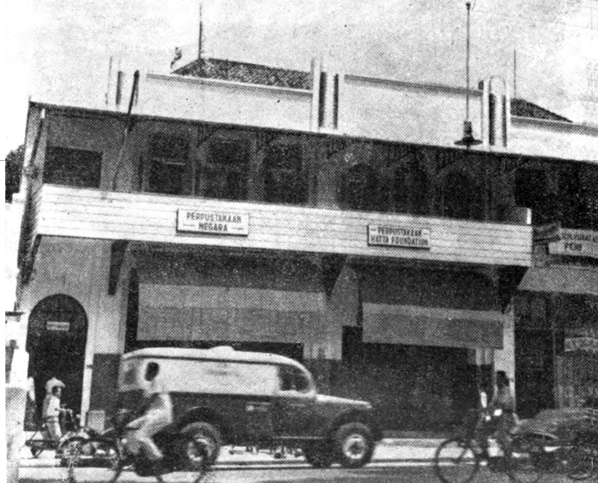
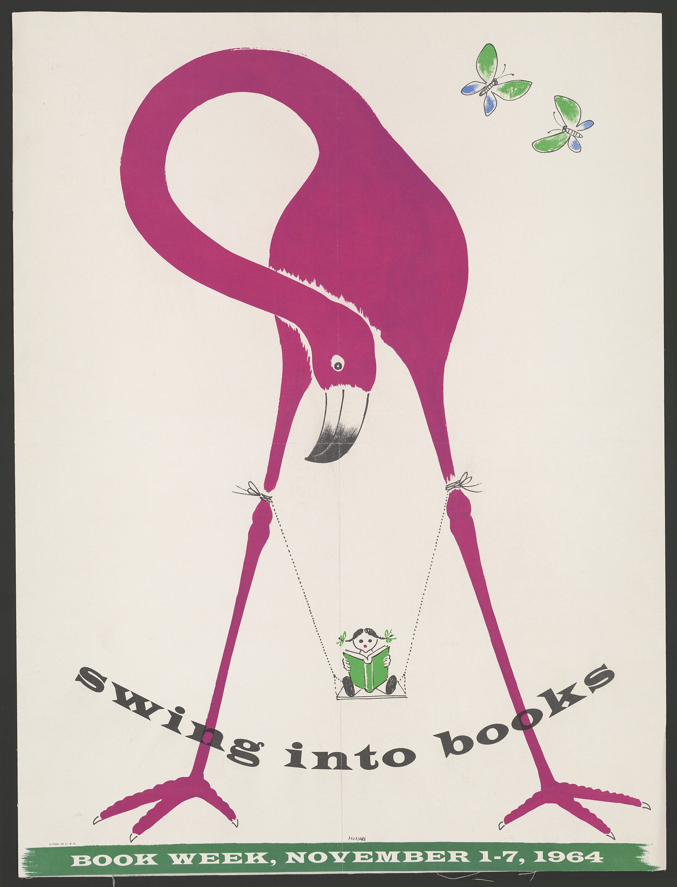
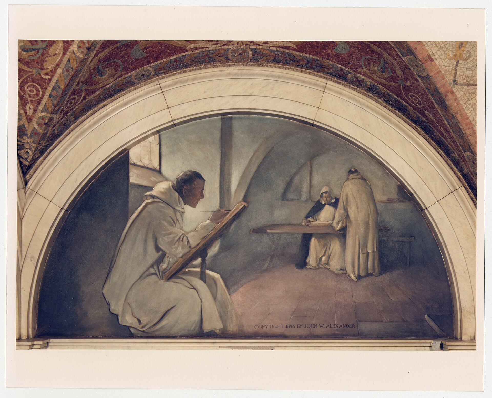
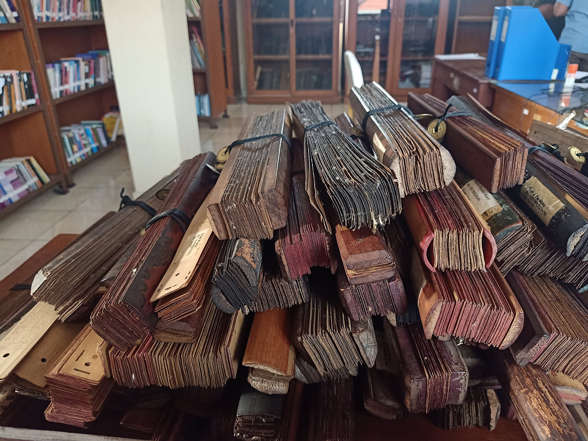

.png)
Identitas sekolah dan semangat belajar.
Karya siswa, layak dibaca.
Terbitkan idemu di CEMARA. Ruang publikasi resmi karya dan literasi siswa. Di sini, tulisan, ilustrasi, dan gagasan dari lingkungan sekolah dikumpulkan, dikurasi, lalu dibaca bersama.
✍
✦
CEMARA
ruang karya
Yang sedang kami baca.
Tiga karya pilihan dari edisi terbaru, plus satu tema yang sedang dibuka untuk pengiriman.
Mereka yang terus berkarya.
Kenali siswa dan penggerak literasi yang membuat ruang ini tetap hidup.
Ruang karya siswa.
CEMARA adalah Cendekia Media Apresiasi dan Ruang Karya, rumah digital bagi gagasan, imajinasi, dan karya siswa agar dapat ditemukan, dinikmati, serta mendapat apresiasi.
Wadah digital yang mudah diakses.
Setiap karya layak dihargai.
Tempat aman untuk berekspresi.
Inti dari semua yang dibagikan.
Jejak literasi.
Arsip literasi menjadi pengingat: setiap gagasan punya tempat untuk tumbuh.




Siapkan karya terbaikmu.
Kirim karya orisinal siswa dalam kategori Cerpen, Puisi, Esai,
Seni, Komik, Artikel, atau Lainnya. Tema utama mengikuti misi
bulanan atau isu literasi yang positif.
Naskah maksimal 1.500 kata dalam DOCX atau PDF. Karya seni dan
komik dikirim sebagai JPG/PNG dengan sisi terpanjang maksimal
2.000 piksel.
Admin, super admin, atau developer meninjau setiap karya secara
manual. Status dan catatan tinjauan dapat dipantau di dashboard.
Karya hanya diterbitkan setelah disetujui.
Jelajahi karya.
-
Temukan
Cari karya berdasarkan judul, nama penulis, atau kategori di aplikasi galeri.
-
Kenali
Klik kartu karya untuk membaca deskripsi dan mengenal karyanya.
-
Buka & Apresiasi
Tekan ikon mata untuk membuka karya secara penuh di reader, lalu tinggalkan komentar dan apresiasi.
Bagikan karyamu.
Kirim karya melalui dashboard. Setiap karya akan ditinjau sebelum diterbitkan.
Email
duta.literasi.icpp@gmail.com
⌂
Tulis / Unggah Karya ↗
Pengelola
Duta Literasi MAN IC PADANG PARIAMAN
Satu ruang untuk setiap suara.
Apa ini?
Platform publikasi resmi untuk karya dan literasi siswa di lingkungan sekolah.
Untuk siapa?
Untuk siswa yang berkarya, pembaca yang ingin menemukan inspirasi, dan penggerak literasi.
Keunggulannya
Karya terkurasi, mudah ditemukan, dan mendapat panggung apresiasi yang layak.
Mulai dari mana?
Masuk ke akun, kirim karya melalui dashboard, lalu pantau status tinjauan dari menu yang sama.
Apresiasi pembaca